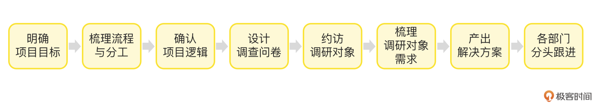
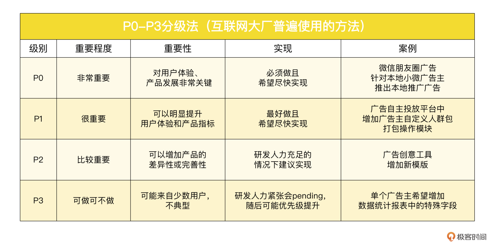
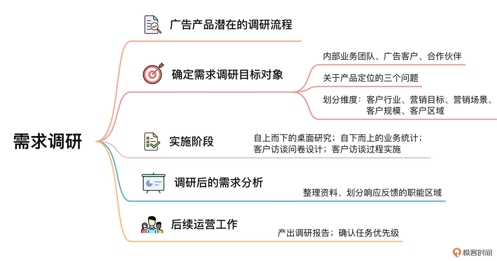

- 00 开篇词 作为一名互联网人，你为什么必须了解广告产品？.md.html
- 01 业务逻辑：广告产品的前世今生和商业模式是怎样的？.md.html
- 02 业务链条：广告主、媒体、第三方等分别如何看待广告产品？.md.html
- 03 头部玩家：从BAT到跳动的字节，广告产品有哪些变化与发展趋势？.md.html
- 04 产品体系：互联网大厂的广告产品存在哪些共性和区别？.md.html
- 05 变现模式：什么样的产品适合采用广告模式变现？.md.html
- 06 产品路线：大厂和小厂的广告产品发展路线有什么区别？.md.html
- 07 计价与效果（上）：如何制定合理的计价方式？.md.html
- 08 计价与效果（下）：如何制定合理的效果评估指标？.md.html
- 09 效果优化：如何一步步从提升曝光量深入到提升销量？.md.html
- 10 流量优化：如何兼顾广告收入和用户体验？.md.html
- 11 物料生产：如何满足广告主的创意需求？.md.html
- 12 精准定向：如何建立一个成熟的用户标签体系？.md.html
- 13 转化优化：互联网大厂如何利用算法优化广告效果？.md.html
- 14 程序化交易：程序化交易是否可以提升广告效果？.md.html
- 15 需求调研：广告产品潜在需求的调研流程是怎样的？.md.html
- 16 平台建设：如何从0到1建立一个完整的广告产品平台？.md.html
- 17 职业发展：新人入行，如何判断自己是否适合做广告产品？.md.html
- 18 团队建设：如何搭建一个高效的广告产品团队？.md.html
- 19 跨团队合作：产研团队和销售端、媒体端、市场端如何合作？.md.html
- 20 产品运营：不同发展阶段如何制定业务目标和运营策略？.md.html
- 21 广告产品彩蛋：课程答疑与推荐书目.md.html
- 结束语 你想要成为什么样的互联网广告产品人？.md.html
- 捐赠
15 需求调研：广告产品潜在需求的调研流程是怎样的？
你好，我是郭谊。
我们知道开发任何产品都需要对产品的市场、需求痛点、对应人群有一个整体的了解，广告产品也不例外。在这一讲中，我要分享一个广告产品从业者经常会遇到的重要的工作场景，那就是：如何进行广告产品潜在需求的调研。
广告，和其他产品一样，在推出新产品或者做大的版本迭代之前，必须要进行需求调研。但是，广告产品的需求调研和其他产品又有所不同，主要是下面这几个因素造成的：
- 广告产品是B端产品（To B产品），面向的对象不是C端用户，而是B端的广告主和代理公司等，所以要对这些企业客户进行调研，难度比调研C端用户要高出很多。
- 广告产品的业务链条很长。媒体平台外部，有广告主、代理公司，还有各种各样的第三方服务公司，另外，程序化广告交易中还有各种平台方；媒体平台内部的销售、策划、运营、市场等团队，也算是广告产品的客户，同样需要进行需求调研。我们需要对这个行业以及内外部合作方有一定的了解。
- 广告产品的市场中，产品本身的类型也很多，除了我们一直以来学习的互联网广告产品，还有传统的电视、户外、报刊杂志广告等，这些都会影响到互联网广告产品所分配到的预算。
接下来，我根据一个典型的广告产品潜在需求调研的案例，来为你说明如何在这么复杂的情况下，调研广告产品的潜在需求。
广告产品潜在需求调研的流程
典型的广告产品调研的流程分为以下几步：

- 明确项目目标
- 明确调研目的：你这次需求调研的目的是要推出新的广告产品还是要迭代现有产品？
- 明确调研对象：你这次需求调研的对象是谁？是广告主、合作媒体还是第三方服务公司？如果是广告主，是什么类型的广告主？
- 梳理流程与分工
- 明确此次调研的发起人：是产品团队、用户研究团队还是其他团队？
- 明确此次调研的干系人：除了发起人之外，此次调研还需要哪些团队配合与参与？
- 召开动员（kick off）会议：发起人和干系人都要参加动员会议，在会议上明确项目目标、项目逻辑及分工，明确项目管理者（一般是发起人）、项目日程和各方未来的交付目标。
- 确认项目逻辑
- 确认桌面研究的逻辑：这次需求调研是否已经有了一些可参考的外部数据，例如此类广告产品的市场大盘和头部玩家、重点广告主行业。
- 确认业务分析的逻辑：销售等业务一线团队是否可以提供一些可参考的内外部数据，例如广告产品在不同行业客户的售卖情况，这些客户对竞品的购买情况。
- 设计调研问卷
- 设计定性的访谈问卷：问卷设计要有针对性，一般包括：调研对象的基本情况，对广告产品的态度和实际购买情况，对你们公司以及竞品的广告产品的看法和建议等。
- 如有必要，后续增加定量问卷：如果调研对象数量众多，例如是中小企业广告主，我们可能会在定性访谈问卷的结论上，增加定量问卷发放，以验证之前访谈的结论，然后把一些产品功能的需求细节进行量化。
- 约访调研对象
- 确认具体的调研对象：和销售、商务或者市场等团队沟通，根据之前确定的项目目标和项目逻辑，结合具体情况，产出具体的调研对象名单，包括但不限于广告主、代理公司、第三方服务公司等，并请这些团队和调研对象确认调研时间和地点。
- 访谈：由内部对接的团队带着，和调研对象面对面的进行访谈，按照调研问卷进行信息收集和记录。
- 梳理调研对象需求
- 确认调研对象对产品的需求：调研对象会反馈很多信息，其中只有一部分属于产品需求，需要产研团队后续跟进，其他需求则分发到其他相关部门跟进。
- 进行需求筛选及分级：产品团队对产品需求进行P0-P3的分级，输入到后续产品迭代的需求池。
- 产出解决方案
- 产出产品解决方案：光有产品功能还不行，产品经理和产品运营还需要把产品针对调研对象反馈的需求，包装成可以满足对方需求的解决方案。
- 产品解决方案输出：产品运营对销售、商务等团队进行内部培训，有必要的时候支持外部客户和合作媒体拜访，解答相关问题。
- 各部门分头跟进
- 其他部门跟进：非产品需求，由销售、商务、市场各团队认领跟进，进度同步产品和运营团队。
- 召开复盘会议：我建议在该项目结束三个月或者半年内，进行复盘会议，总结进度，解决跟进中的问题，并为下一次需求调研项目沉淀方法论。
以上就是一次典型的广告产品潜在需求的调研流程。那么，接下来，我将对其中的关键环节和重难点进行进一步的分析及讲解。
如何确定广告产品需求调研的目标对象？
进行广告产品潜在需求调研的第一个挑战，就是：如何确定广告产品调研的目标对象？
一般来说，广告产品需求调研的对象有以下几类：
- 内部的业务团队，例如销售、策划、运营等，可以把他们看作广告产品的内部客户；
- 广告客户：包括广告主、广告代理公司等，一般是通过销售团队联系；
- 合作伙伴：包括第三方服务公司、联盟产品的合作流量方、广告行业的垂直媒体等，一般是通过商务团队或者市场及品牌公关部联系。
这里，我以广告客户为例，讲解一下如何确定产品调研的目标对象。
要确定产品调研的目标客户，其实就是要清楚你的广告产品的目标客户是谁。这和你的产品定位有关。做任何产品定位，你都要先问自己三个问题：
你的产品是针对哪些客户，在什么场景下，遇到了什么麻烦或者有什么困扰？
你的产品为客户提供了什么解决方案？
你的产品和竞品相比，不可替代性或差异性体现在哪里？针对这个问题我要多说一句：现在一般不太可能存在人无我有、不可替代的产品，我们的主要目标是找到自己产品和竞品的差异，也就是人有我优之处。
目标客户的分类
那广告产品的目标客户是怎么分类的呢？我们以互联网广告产品的中大型广告主为例，你可以按照以下维度去划分：
- 客户行业
以广告主为例，可以分为汽车、日化、3C、食品饮料、游戏、电商等。你还可以进一步举出每个行业的典型客户，例如：汽车行业有宝马、特斯拉这样的跨国品牌，也有江淮、比亚迪、蔚来这样的国产品牌，日化行业有联合利华、上海家化这样的老牌子，也有完美日记、摇滚动物园这样的新锐淘品牌。
有的广告产品是通用的，但是一般都会有重点行业。这些重点行业贡献了广告产品的大部分甚至是绝大部分收入，因此是我们需求调研的重点；而典型客户代表了一批客户的营销需求，又是我们在重点行业里调研的重中之重。
- 营销目标
营销目标一般可以分为品牌、效果和品效，广告产品一般都有针对性的营销目标，例如视频贴片广告一般是品牌广告，搜索关键词广告一般是效果广告，信息流广告有可能是品效广告。
- 营销场景
“场景”这个词在广告产品业务中，通常是指广告客户进一步细分的营销目标，一般可以分为品牌曝光、新品推广、事件营销、销售线索收集、App激活、商品购买等。像品牌广告产品主要是应用于前三类场景，效果广告产品主要应用于后面的效果转化类场景。
- 客户规模
以单次投放看，可以按照金额分为万、十万、百万等级别，如果以广告主和你们公司签订的年度框架看，可能会达到千万甚至上亿级别。我们虽然会侧重调研年度框架和单次投放金额高的客户，但是也会在中小投放金额中选择典型客户，这样后续的产品设计和解决方案才能更好地满足不同类型客户的需求。
- 客户区域
客户区域是销售团队常用的业务划分维度，例如把客户区域分成华北、华东、华南等。每个区域的客户都有一定的特点，例如华北的客户更看重客情和关系，华东的客户更看重服务的专业性，华南的客户更看重收益等等。
如何进行广告产品的潜在需求调研？
参考以上维度选定我们的调研对象之后，我们就要开始进入到调研的实施阶段了。在调研的实施过程中，主要有几个关键环节：
1. 自上而下（Top-down）的桌面研究
在冲去找广告主访谈之前，我建议你先进行一番桌面研究。
桌面研究：又叫做desk research，指不进行一手资料的实地调研和采集，而直接通过杂志、书籍、文档、互联网搜索等现有二手资料进行分析和研究的方法，通常也可以称之为案面研究，也有业内人士称之为“二手资料研究法”。
桌面研究可以帮助你了解广告产品的市场大盘、竞品及其产品策略，以及广告主购买及投放广告产品的大盘数据。
广告产品需求调研常见的二手资料来源包括：市场研究公司（如CTR、艾瑞等）的行业报告、第三方数据监测公司的行业数据、业内垂直媒体的报告、券商关于竞品的报告、竞品官网信息等。
另外，在桌面研究阶段，你可以先寻求公司里做商业分析或战略分析的同事的帮助。一来，他们更清楚二手资料的来源，包括有一些付费数据的权限；二来，你可以邀请他们加入调研项目，让他们成为公司内部的咨询角色。他们在桌面研究和数据分析上的专业性，会让调研完成得更加高效。
通过桌面研究，我们应该对自身产品的市场规模潜力、主要竞品、产品发展的方向、广告主在采购广告产品方面的大盘数据等方面有一个大概的认知。
2. 自下而上（Bottom-up）的业务统计
桌面研究得出的毕竟是一些探索性的假设观点，我们在访谈之前，还需要和销售这样的业务团队深入沟通，统计内部的业务数据。成熟的销售团队，一般会有专门负责销售运营的同事，他们的工作就包括统计业务数据。而且，销售团队还会通过各种渠道收集客户对于竞品的购买信息，这些数据或许没有桌面研究得到的那么系统和完整，但是在数据粒度上是前者无法相比的。
这个环节的业务统计工作非常重要，因为它可以帮助你：
- 了解不同行业及具体的广告主对你的广告产品的购买、投放及效果数据；
- 了解广告主在主要竞品上的部分购买数据，以及广告主对于竞品的评价；
- 了解广告主日常对销售反馈的产品需求；
- 初步选定需要调研的行业及广告主。
通过业务统计，我们可以验证或者校准桌面研究的一些结论，对产品及业务作出更加准确的判断。同时，我们也通过业务统计选定了具体的访谈对象，后续请销售同事和访谈对象确认接受访谈及约访即可。
3. 客户访谈问卷设计
客户访谈不能够漫无目的地随意聊天，因为这样你得到的信息是无法对比的。所以，在访谈之前，我们必须设计一个访谈问卷。在大厂里，这类问卷可以优先争取用户研究团队的帮助。这个团队的很多同事都有心理学、社会学等学科的背景，有问卷设计的专业知识和经验。你要做的是提供我们前面所讲的那些信息，提出需求，并且在问卷初稿出来之后给出修改建议并最终确认。
广告主访谈问卷一般是如下的结构：
- 广告主的基本情况：目标用户画像、主推商品、全年营销节奏等；
- 广告主对广告产品的购买情况：全年广告预算、全媒体广告预算分配（包括传统媒体如电视）、互联网各媒体平台广告预算分配等；
- 广告主对广告产品的评价：对竞品的看法、对你的产品的看法、对未来广告产品/运营/其他方面的希望和建议等。
4. 客户访谈过程实施
访谈对象一般是之前销售联系的广告主市场部的员工。访谈小组一般至少由产品经理或者产品运营和销售组成，也可以包括用户研究、商业分析、市场等团队的同事，具体看项目的目标以及干系人情况。
面对面的客户访谈最好控制在1小时之内，不要超过1个半小时，否则客户容易感到厌倦。访谈中，最好主要由一个人进行提问，其他同事补充。访谈小组所有的成员最好同时进行记录，最后整理资料的时候可以互相补充。关于是否使用录音笔记录，就需要考虑客户的接受度。
因为和客户约谈一次也不容易，所以有时候销售会把其他事宜（比如产品介绍、答疑等）跟访谈约在同一次。从访谈拿到的信息纯净度来说，单独访谈比较好，不过广告是相当复杂的业务，而且销售也有客情维护的需求，所以，如果客户希望和你们多进行一些其他方面的沟通，灵活应对即可。
如何进行调研之后的潜在需求分析？
通过访谈拿回来的资料要及时进行整理，并且可以按照行业或者场景进行汇总，得出某个行业（例如汽车行业）或者某个场景（例如新品推广）的概况。之后，我们再从中“萃取”出广告主对产品的需求。
需要注意的是，只有关于产品功能方面的需求，才是我们需要的针对产品的潜在需求，例如希望增加新的广告产品类型（例如激励视频广告）、希望现有广告产品增加新的功能（例如在广告位中增加用户一键分享功能）等等。但有的时候，广告主提的需求并不都属于产品需求。
举个例子，如果广告主抱怨你的产品太贵，就属于定价问题，产品经理一般只负责测算产品的底价，实际售卖价格由销售、财务等团队决定，遇到这种情况，我们就应该反馈给相关团队，让他们跟进。我在百度时还曾经遇到过广告主说我们只有搜索广告强，所以他只会在购买效果广告时考虑我们，购买品牌广告时不会优先考虑我们。这其中有一部分原因是百度当时还没有建立起自己在品牌广告方面的口碑，这需要传递给品牌公关部门去跟进。
访谈中，也可能遇到客户提出一些貌似针对产品功能的需求，但是实际上你的产品已经有这些功能了，只是客户不了解，不会用。这属于产品运营的工作范畴，后续应该加强产品解决方案的产出以及对销售和客户的产品培训。
如何进行后续的广告产品运营工作？
通过以上整个产品潜在需求的调研，我们可以产出一份完整的调研报告，其中包括：
- 整个广告产品的市场大盘、主要竞品、产品发展趋势以及我们面临的挑战；
- 我们的广告主现状，包括消费情况、对产品的态度与建议；
- 未来的行动建议，包括针对产品的，以及针对其他方面的。
在调研报告产出后，我们需要召开一次总结会议，在会议上召集所有干系人参加，让各个团队的接口人认领未来的行动建议，并在会后一段时间内把它细化为具体的行动计划。
其中，广告产品经理会针对产品方面的需求，进行分级，P0为重要的、紧急的最高级别需求，P3为现阶段不重要也不紧急的需求。对需求进行分级的意义在于研发人力永远是紧张的，在后续需求评审中，你至少要保证优先级高的需求能尽快实现。

举个例子，微信朋友圈广告针对本地小微广告主（比如非连锁的奶茶店、洗衣店等）推出本地推广广告，允许这些小微广告主以几千元的价格购买，在其所在商圈方圆几公里内的地域定向广告，就属于一个P0级别的需求。该本地推广产品上线之后，在各地渠道代理商和小微广告主那里引起了强烈的反响，也为微信朋友圈广告流量的精细化运营作出了显著贡献。
重点回顾
在这一讲中，我为你介绍了广告产品潜在需求调研的典型流程，并且以广告主产品需求调研为例，说明了怎样从不同维度确定需求调研的对象；并结合桌面研究和业务统计，得出最初的探索性假设；最后通过客户访谈的问卷设计和实施，对之前的假设进行验证，并拿到具体的客户需求。
在结束调研之后，我们要把客户需求分成产品已经满足的客户需求、产品尚未满足的客户需求和产品无关的客户需求几类：
- 产品已经满足的客户需求，请产品运营团队通过产品解决方案和产品培训来跟进；
- 产品尚未满足的客户需求，产品经理通过需求分级和需求评审，推动广告产品迭代、更新；
- 和产品无关的客户需求，由调研小组反馈给相关部门进行认领及跟进。
在产品需求调研项目中，我们还要重视整体的项目管理。包括项目目标的确定、相关团队的组织与kick off会议、调研小组的成立及调研落地、调研报告的产出与总结会、调研后三个月到半年的复盘会等等，这些都是需要我们跟进执行的重要节点。

广告产品的潜在需求的调研可以和日常的产品需求反馈互为补充，加上广告产品的内部数据指标监控、广告产品市场及竞品的外部行业数据监控等，都是我们收集产品需求、进行广告产品升级与迭代的重要依据。
实战演练
在了解了广告产品需求调研的流程与关键环节之后，我们来练练手吧！请针对抖音广告（或者任选一种你感兴趣的广告产品），制定一个调研计划。这个计划至少要包括：调研对象、调研目标、桌面研究思路、访谈问卷设计。如果可能的话，最好能找到至少三家调研对象，进行真实的访谈（如果情况有限制，可以使用问卷进行在线访谈），并产出调研报告，在报告中提供此次调研对于该广告产品的需求与建议。
欢迎你在评论区留下你调研的结果和我讨论，也欢迎你把这节课分享给需要的朋友，我们下节课再见！
© 2019 - 2023 Liangliang Lee. Powered by gin and hexo-theme-book.